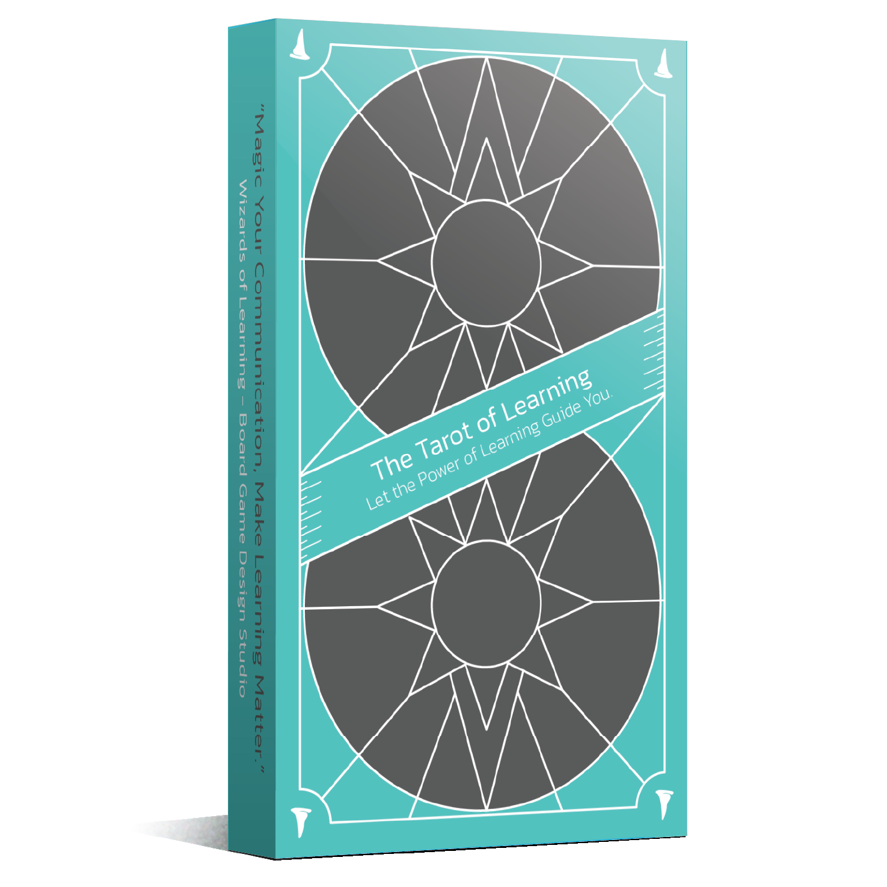
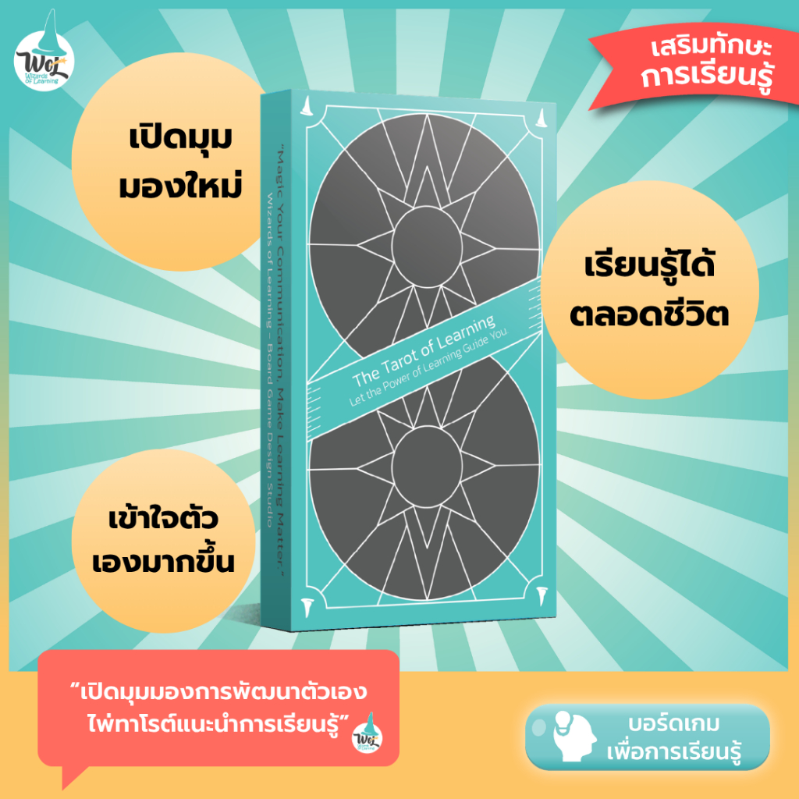

เปิดมุมมองใหม่
ใช้ไพ่เป็นคำถาม เพื่อมองความคิด ความรู้สึก และทางเลือกที่อาจยังไม่เคยหยิบมาคุยกับตัวเอง
บางคำตอบไม่ได้ซ่อนอยู่ในอนาคต แต่อยู่ในวิธีที่เราเลือกมองตัวเองในวันนี้ ไพ่ชุดนี้ชวนคุณหยุด ฟัง ตั้งคำถาม และค่อยๆ เห็นวิธีเรียนรู้ที่เหมาะกับตัวเองมากขึ้น

ใช้ไพ่เป็นคำถาม เพื่อมองความคิด ความรู้สึก และทางเลือกที่อาจยังไม่เคยหยิบมาคุยกับตัวเอง
ช่วยให้คนเห็นว่าวิธีเรียนรู้และเส้นทางเติบโตของตัวเองอาจไม่จำเป็นต้องเหมือนใคร
จากเรื่องนามธรรมอย่างตัวตน การเติบโต และการเรียนรู้ กลายเป็นบทสนทนาที่เริ่มได้จากไพ่หนึ่งใบ
คำถามที่ดีอาจไม่ได้เร่งให้เราตอบเร็วขึ้น แต่อาจช่วยให้เราเลือกก้าวต่อไปได้ชัดขึ้น
สำหรับ journaling ทบทวนช่วงเปลี่ยนผ่าน หรือวางทิศทางการเติบโต
เป็นคำถามตั้งต้นที่ช่วยให้การคุยเรื่องตัวเองลึกขึ้นโดยไม่หนักเกินไป
เหมาะกับ check-in, reflection session หรือกิจกรรมออกแบบเส้นทางการเรียนรู้

หน้าสินค้ารวมรายละเอียดชุดไพ่ ราคา และช่องทางสั่งซื้อ เหมาะสำหรับคนที่อยากใช้เป็นเครื่องมือ ทบทวนตัวเอง โค้ช หรือเปิดวงสนทนาเรื่องการเรียนรู้
เปิดหน้าสินค้า Tarot of Learningสำหรับคนที่อยากสำรวจตัวเอง เห็นทางเลือกใหม่ และออกแบบการเรียนรู้ให้เหมาะกับชีวิตของตัวเองมากขึ้น